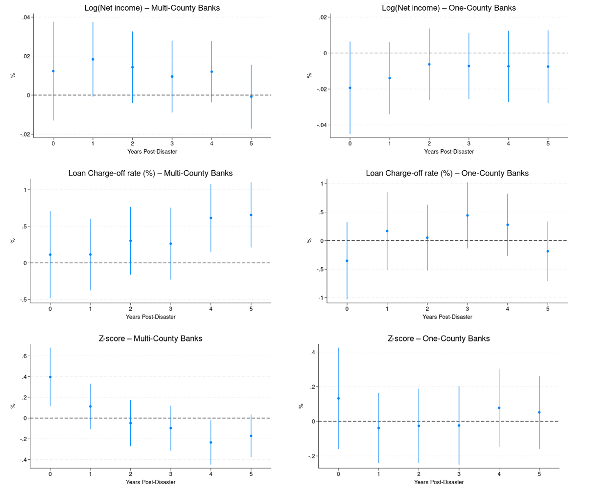

I am an economist at the Federal Reserve Bank of New York in the Financial Intermediation Function.
My research interests lie at the intersection of Financial Intermediation, Economic History, and Regulation.
I currently teach "Behavioral Finance" at Princeton University.
I received my Ph.D. in Finance from the University of St. Gallen (HSG) in Switzerland in 2018. Previously, I worked at the BIS as a research assistant (later technical advisor) and at Roland Berger as a management consultant.
We find that the flightiness of depositors displays pronounced fluctuations over time, reaching unprecedentedly high levels after the Covid-19 crisis. Elevated deposit flightiness coincides with low interest rate environments, expansions in central bank reserves and a disproportionate increase in corporate deposits. Our dynamic model rationalizes these trends based on heterogeneity in investors' convenience value, where those in the banking system value the convenience benefits of deposits more. Following deposit inflows from outside investors, e.g., due to QE's reserve expansions, the marginal depositor becomes more rate-sensitive and the risk of panic runs increases. Our findings imply that the risk of panic runs triggered by policy rate hikes is amplified when the Fed's balance sheet size is larger, highlighting a novel linkage between conventional and unconventional monetary policy.
Banks may play a more active role in corporate finance than previously documented. Banks with industry expertise steward firms to undertake value-creating opportunities in transition technologies or expansion (new to the firm) sectors. Bank financing can unlock neglected opportunities, especially when banks have specialization, and firms neglect opportunities because of short-termist discount rates. We set up an empirical two-way fixed effect identification approach, building off the dynamic comparables strategy in the spirit of Sun and Abraham (2021), to test these predictions empirically in U.S. administrative loan data covering over 70% of commercial lending. We find that firms are more likely to undertake transition and expansion loans with specialized banks. The effect is stronger for short-termist firms (Kodak moments) and robust to limiting the sample to firms with similar transition opportunities under the Inflation Reduction Act. Consistent with stewardship emerging as a consequence of bank specialization, banks offer lower interest rates for these projects.
We examine how banks' depositor composition shapes lending behavior, using granular supervisory data on deposits, loans, and securities for the largest U.S. banks. Classifying banks by depositor specialization, we find persistent differences in funding that translate to differences in asset allocations. Retail-depositor oriented banks hold longer-maturity loans and conduct more real estate lending, while corporate- and NBFI-oriented banks, whose funding is more volatile, hold shorter loans and liquid securities. Loan-level analyses show that stable funding is associated with lower rates, longer maturities, and larger loans. Growth in deposits is allocated differently depending on the depositor specialization of the bank, something we explore using exogenous deposit growth during COVID.
We document that the quasi-mandatory U.S. flood insurance program reduces mortgage lending along both the extensive and intensive margins. We measure flood insurance mandates using FEMA flood maps, focusing on the discreet updates to these maps that can be made exogenous to true underlying flood risk. Reductions in lending are most pronounced for low-income and low-FICO borrowers, implying that the effects are at least partially driven by the added financial burden of insurance. Our results are also stronger among non-local or more-distant banks, who have a diminished ability to monitor local borrower adherence to complicated insurance mandates. Overall, our findings speak to the unintended consequences of well-intentioned regulation, and to the importance of factoring in affordability and enforcement feasibility when introducing mandatory standards.
Using unique nationwide property-level mortgage, flood risk, and flood map data, we analyze whether lenders respond to flood risk not captured in FEMA flood maps. We find that lenders are less willing to originate mortgages and charge higher rates for lower LTV loans that face "un-mapped" flood risk. This effect is weaker for high income applicants, as well as non-banks and small local banks. However, we find evidence that non-banks and local banks are more likely to securitize/sell mortgages to borrowers prone to flood risk. Taken together, our results indicate that mortgage lenders are aware of flood risk outside FEMA's identified flood zones.
We merge several historical data sets from Germany to show that influenza mortality in 1918–1920 is correlated with societal changes, as measured by municipal spending and city-level extremist voting, in the subsequent decade. First, influenza deaths are associated with lower per capita spending, especially on services consumed by the young. Second, influenza deaths are correlated with the share of votes received by extremist parties in 1932 and 1933. Our election results are robust to controlling for city spending, demographics, war-related population changes, city-level wages, and regional unemployment, and to instrumenting influenza mortality. We conjecture that our findings may be the consequence of long-term societal changes brought about by a pandemic.
with Quirin Fleckenstein, Sebastian Hillenbrand, and Anthony Saunders
Journal of Finance (JF)
We examine how lead arrangers' ownership stakes in syndicated loans evolve after origination. Lead arrangers tend to retain shares in bank-held loans but frequently sell shares in loans distributed to institutional investors, typically within days of origination. The frequency of these loan sales has increased over time, aligning with the rise of the originate-to-distribute model. Importantly, we find no evidence that loan sales are associated with worse performance. Additional evidence suggests that exposure through other loans, temporary retention during syndication, and reputation concerns help mitigate information asymmetries in the syndicated loan market. (Previously circulated as "The Myth of the Lead Arranger's Share.")
We study specialized lending in a credit market competition model with private information. Two banks possess "general" signals regarding borrower quality. The specialized bank gains an additional advantage through further interactions with the borrower, accessing "specialized" signals. In equilibrium, both lenders use general signals to screen applications, and the specialized lender prices the loan based on its specialized signal conditional on making a loan. This private-information-based pricing delivers the empirical regularity that loans made by specialized lenders have lower rates and better ex-post performance. We show robustness of our equilibrium under a generalized information structure, endogenize the specialized lending through information acquisition, and discuss various economic implications.
Using highly detailed data on the loan portfolios of large U.S. banks, we document that these banks "specialize" by concentrating their lending disproportionately into one industry. This specialization improves a bank's industry-specific knowledge and allows it to offer generous loan terms to borrowers, especially to firms with access to alternate sources of funding and during periods of greater nonbank lending. Superior industry-specific knowledge is further reflected in better loan and, ultimately, bank performance. Banks concentrate more on their primary industry in times of instability and relatively lower Tier 1 capital. Finally, specialization counteracts a well-documented trend in reduced lending by large banks to opaque small and medium-sized enterprises.
Firms with debt overhang experience 2% slower asset growth during ordinary times and up to 3% slower growth during a crisis, compared to similar firms without debt overhang. These patterns extend to employment and capital expenditures. The effects during the great recession are more pronounced for firms with greater need for external funding, including those that had to refinance during the crisis and those with fewer unused credit lines. We account for debt-structure endogeneity by showing that overhang correlates with credit line cuts after the failure of a syndicated member bank. Early COVID-19 data suggests the increase in debt overhang could lead to up to 10% slower growth for firms in the most-affected industries.
We use the German Crisis of 1931 to study how depositors behave during a bank run in the absence of deposit insurance. Deposits decline by around 20 percent during the run, with equal outflows from both ex-post failing and surviving banks — regular depositors are unable to identify failing banks. In contrast, the interbank market precisely identifies which banks will fail: it collapses entirely for failing banks but continues to function for surviving banks. Since regular depositors appear uninformed, deposit insurance is unlikely to exacerbate moral hazard. Instead, interbank depositors are best positioned to provide market discipline via short-term funding. (Early version circulated as "Micro-evidence from a system-wide financial meltdown: The German Crisis of 1931.")
🏆 2025 Michael J. Brennan Award — Best Paper in the RFS, 2024
I study the effects of an increase in local mortgage credit supply on house prices using a natural experiment from Switzerland. In 2008, retail customers migrate deposits from universal banks suffering overseas losses to narrowly-local mortgage banks. Using the distance between the two bank types as an instrument for deposit growth, I show that local mortgage banks increase mortgage lending, which correlates with subsequent house price growth. My results highlight that bank specialization plays an important role in the allocation of capital.
We study the impact of borrowing constraints on home ownership and housing demand by comparing the tenure choice and housing quality of consumers who receive intra-family wealth transfers to those that do not. On average the receipt of a wealth transfer increases the propensity of consumers to transition from renters to home-owners by 6–8 percentage points (35% of the sample mean). Additional analyses suggest this effect is driven by the relaxation of borrowing constraints rather than wealth effects. By contrast, wealth transfers do not increase the likelihood that existing homeowners trade up to larger homes in better locations.
We investigate the importance of housing-based collateral for small and young — i.e. credit-constrained — firms across six European economies. We find that borrowing, investment, and employment are all more strongly correlated with house price growth in these small and young firms, compared with slightly larger or older firms. This effect is on average stronger in the boom years before the global financial crisis, and more pronounced in countries with more lengthy bankruptcy resolution procedures.
This paper investigates the announcement effects of contingent convertible securities (CoCo bonds) issued by global banks between January 2009 and June 2014. Using 34 financial institutions and 87 CoCo bond issues, we examine abnormal stock price reactions and CDS spread changes around announcement dates. CoCo bond announcements correlate with positive abnormal stock returns and negative CDS spread changes, most pronounced for first-time issues. We explain the CDS changes by lower probability of costly bankruptcy and the abnormal returns by a signaling framework based on pecking order theory and the tax shield advantage over equity.
with Ruchi Avtar, Rajashri Chakrabarti, Janavi Janakiraman, and Maxim L. Pinkovskiy
Economic Policy Review (EPR)
We review the academic literature on possible links between climate change and inequality in the United States. The impact of both physical and transition risks may be uneven across location, income, race, and age — driven by geography and adaptation capabilities. Measures to adapt to climate change and transition to lower emissions risk increasing inequality. While federal aid and insurance can mitigate the direct impact of physical risks, their structure may inadvertently sustain and entrench existing inequalities. We conclude by outlining directions for future research.
Not very. We find that FEMA disasters over the last quarter century had insignificant or small effects on U.S. banks' performance. This stability seems endogenous rather than a mere reflection of federal aid. Disasters increase loan demand, which offsets losses and actually boosts profits at larger banks. Local banks tend to avoid mortgage lending where floods are more common than official flood maps would predict, suggesting that local knowledge may also mitigate disaster impacts.

Courses & instruction
Teaching
Behavioral Finance
Princeton University · Current
Additional course materials, syllabi, and lecture notes can be added to this page.
Data & resources
Syndicated Loan Ownership
Dealscan is great for measuring syndicate stakes at origination—but those stakes aren’t always the same as who actually owns the loan after it starts trading. This is particularly true for Term Loan B facilities, where ownership can shift rapidly from banks to funds. This page provides data and guidance related to computing syndicated loan ownership shares, complementing the paper Do Lead Arrangers Retain their Lead Share? (Journal of Finance).
A guide for computing the share of a loan held by the arranging bank using Dealscan can be found here.